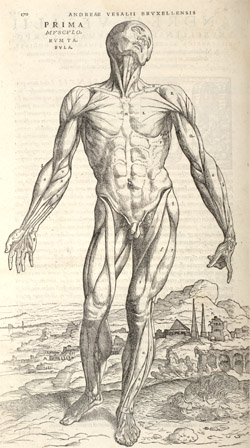

Illustrations of the De humani corporis fabrica , 1543
It must have been shortly after the publication of the Tabulae sex that Vesalius
started to work towards the larger project that would culminate in 1543 in the
De humani corporis fabrica .
In a letter of 1539 we learn that he was making
efforts to procure bodies for dissection in order to prepare the plates, and
that he was concerned to persuade Calcar to lend his services as draftsman.
There has been speculation about who, in the event, did draw the illustrations
that were cut on blocks for the printing of 1543. The more diagrammatic ones
were probably drawn by Vesalius himself, but the early sources conflict about
the more pictorial ones. Some identify Calcar, but one source, of the 1540s,
appears to identify the hand of the greatest of all the Venetian painters of
the time, Titian (c.1490-1576). We know that Calcar did in fact work for a
time in Titian's workshop in Venice, and it may be that this confused some
contemporaries as to whom should be given the credit. For a variety of reasons
Titian's participation does not, in the end, seem likely. Nevertheless, Calcar may
have been only one of several artists who worked on the project
(O'Malley, 1964, p.127).

The artists had to work in close collaboration
with Vesalius, who was very concerned that the images should convey accurate
information.(1) But Vesalius was also concerned about aesthetics: for example,
he was very determined that care should be taken in the printing to preserve
the 'artistic and pleasing gradations of shadows'.(2) It is
notable that he saw his audience as much wider than doctors and anatomists.
He made clear, in the text accompanying the first 'table' of the muscles,
that painters and sculptors were intended to benefit from his work.(3)
It was customary for the draftsman to draw the design on the wood blocks; then
highly skilled woodcutters would cut away the wood to leave the drawn lines
projecting in relief. The accuracy with which this task was performed was
crucial to the success of the enterprise, for inaccuracies at that stage could
destroy the information-value as well as the general appearance of the drawings.
The blocks were cut in Venice and Vesalius himself appears to have superintended
the process. When the whole set of blocks had been cut to his satisfaction, they
were sent to Oporinus in Basle for printing. Vesalius even sent proof impressions,
printed in Venice from the blocks, in order to give Oporinus an indication of the
standard he expected in the finished work. He also sent instructions as to how
he wanted the letterpress set up in relation to the illustrations.(4)
He reveals himself as
a perfectionist, absolutely determined that his book should be a flawless piece
of work, both accurate and beautiful; the final product has always been regarded
as a masterpiece of book production.
(1) M. Kemp, 'A drawing for the
Fabrica; and some thoughts upon the Vesalius muscle-men', Medical History , 14,
1970, pp.277-88, esp. p.282. [Back]
(2) Saunders and O'Malley (1950), pp.46ff. [Back]
(3) Quoted Rosand and Muraro, Titian and the Venetian Woodcut (Washington: 1976), p.214. [Back]
(4) Letter of 24 August 1542 from Vesalius to Oporinus, Saunders and O'Malley (1950) p.46. [Back]
© 2004 Edinburgh University Library / Royal College of Physicians of Edinburgh
www.lib.ed.ac.uk
All rights reserved
26 August 2004
|